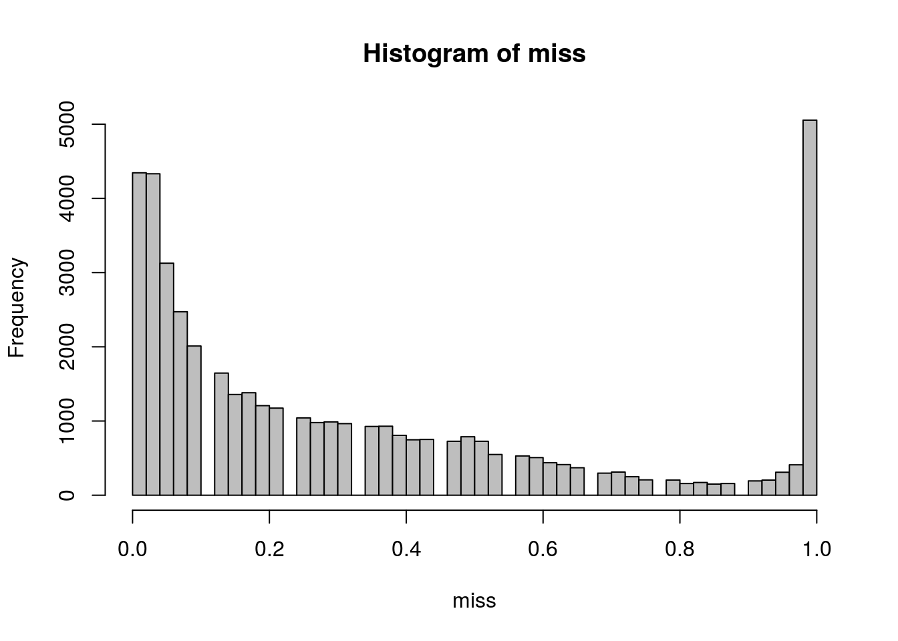
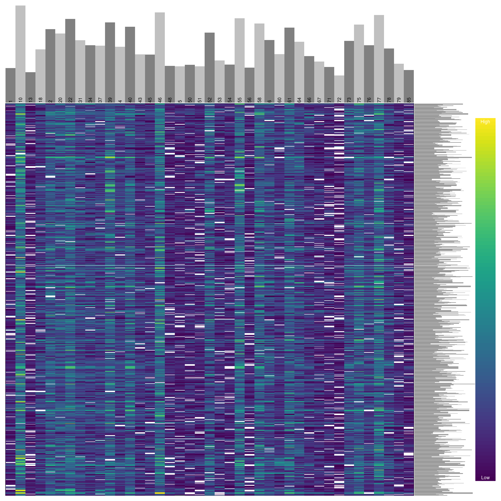

vcfR documentation
byBrian J. Knaus and Niklaus J. Grünwald
Quality filtering
Brian J. Knaus
In a previous session we filtered our GBS data based on missingness. First, samples with a high degree of missingness were identified and removed from the data set. Second, variants that had a high degree of missingness were identified and removed. Here we identify variants with unusual coverage and remove them.
This is adapted from a package vignette that uses genomic data. Here we use GBS data.
browseVignettes('vcfR')
vignette(package="vcfR", topic = "sequence_coverage")Data import
library(vcfR)
vcf <- read.vcfR('TASSEL_GBS0077_filtered.vcf.gz')vcf## ***** Object of Class vcfR *****
## 41 samples
## 44,321 variants
## Object size: 23.8 Mb
## 1.13 percent missing data
## ***** ***** *****head(vcf)## [1] "***** Object of class 'vcfR' *****"
## [1] "***** Meta section *****"
## [1] "##fileformat=VCFv4.0"
## [1] "##FORMAT=<ID=GT,Number=1,Type=String,Description=\"Genotype\">"
## [1] "##FORMAT=<ID=AD,Number=.,Type=Integer,Description=\"Allelic depths fo [Truncated]"
## [1] "##FORMAT=<ID=DP,Number=1,Type=Integer,Description=\"Read Depth (only [Truncated]"
## [1] "##FORMAT=<ID=GQ,Number=1,Type=Float,Description=\"Genotype Quality\">"
## [1] "##FORMAT=<ID=PL,Number=3,Type=Float,Description=\"Normalized, Phred-s [Truncated]"
## [1] "First 6 rows."
## [1]
## [1] "***** Fixed section *****"
## CHROM POS ID REF ALT QUAL FILTER
## [1,] "1" "4509" "S1_4509" "T" "C" "20" "PASS"
## [2,] "1" "4657" "S1_4657" "G" "A" "20" "PASS"
## [3,] "1" "5647" "S1_5647" "C" "G" "20" "PASS"
## [4,] "1" "5714" "S1_5714" "G" "A" "20" "PASS"
## [5,] "1" "6122" "S1_6122" "T" "G" "20" "PASS"
## [6,] "1" "6234" "S1_6234" "C" "T" "20" "PASS"
## [1]
## [1] "***** Genotype section *****"
## FORMAT 1
## [1,] "GT:AD:DP:GQ:PL" "0/0:5,0:5:96:0,15,180"
## [2,] "GT:AD:DP:GQ:PL" "1/1:0,1:1:66:36,3,0"
## [3,] "GT:AD:DP:GQ:PL" "1/1:0,5:5:96:180,15,0"
## [4,] "GT:AD:DP:GQ:PL" "0/0:3,0:3:88:0,9,108"
## [5,] "GT:AD:DP:GQ:PL" "0/1:3,2:5:99:57,0,93"
## [6,] "GT:AD:DP:GQ:PL" "0/1:7,6:13:100:177,0,213"
## 10 13
## [1,] "1/1:0,10:10:99:255,30,0" "0/0:9,0:9:99:0,27,255"
## [2,] "0/0:4,0:4:94:0,12,144" "0/0:1,0:1:66:0,3,36"
## [3,] "0/0:8,0:8:99:0,24,255" NA
## [4,] "0/0:7,0:7:99:0,21,252" "0/0:2,0:2:79:0,6,72"
## [5,] "1/1:0,31:31:99:255,93,0" "0/0:6,0:6:98:0,18,216"
## [6,] "1/1:0,50:50:99:255,150,0" "0/0:9,0:9:99:0,27,255"
## 18 2
## [1,] "0/0:5,0:5:96:0,15,180" "1/1:0,8:8:99:255,24,0"
## [2,] "1/1:0,7:7:99:252,21,0" "0/0:5,0:5:96:0,15,180"
## [3,] "1/1:0,3:3:88:108,9,0" "0/0:3,0:3:88:0,9,108"
## [4,] "1/1:0,2:2:79:72,6,0" "0/0:8,0:8:99:0,24,255"
## [5,] "0/0:28,0:28:99:0,84,255" "1/1:0,19:19:99:255,57,0"
## [6,] "0/0:34,0:34:99:0,102,255" "1/1:0,39:39:99:255,117,0"
## [1] "First 6 columns only."
## [1]
## [1] "Unique GT formats:"
## [1] "GT:AD:DP:GQ:PL"
## [1]Extract Depth Data (DP)
dp <- extract.gt(vcf, element = "DP", as.numeric=TRUE)boxplot(dp, col=2:8, las=3)
Once we have extracted the quantile information we can use apply and quantile to build intervals for what we may consider acceptable coverage.
quants <- apply(dp, MARGIN=2, quantile, probs=c(0.1, 0.8), na.rm=TRUE)
#quants <- apply(dp, MARGIN=2, quantile, probs=c(0.34, 0.68), na.rm=TRUE)
quants[,1:17]## 1 10 13 18 2 20 22 31 34 37 39 4 40 43 45 46 48
## 10% 2 7 2 3 6 4 6 4 3 3 6 4 5 3 3 6 2
## 80% 24 63 22 35 50 44 55 41 36 37 54 38 48 32 31 60 25We can now use these thresholds to censor data outside this threshold.
dp2 <- sweep(dp, MARGIN=2, FUN = "-", quants[1,])
dp[dp2 < 0] <- NA
dp2 <- sweep(dp, MARGIN=2, FUN = "-", quants[2,])
dp[dp2 > 0] <- NA
dp[dp < 4] <- NAUpdate the vcfR object with the censored data.
vcf@gt[,-1][ is.na(dp) == TRUE ] <- NAWe’ll want to see how this has affected the missingness of our vcfR object.
vcf## ***** Object of Class vcfR *****
## 41 samples
## 44,321 variants
## Object size: 22.7 Mb
## 33.43 percent missing data
## ***** ***** *****We’ll want to mitigate variants with a high degree of missingness.
dp <- extract.gt(vcf, element = "DP", as.numeric=TRUE)
miss <- apply(dp, MARGIN=1, function(x){sum(is.na(x))})
miss <- miss/ncol(dp)Plot a histogram.
hist(miss, col=8, breaks=seq(0,1,by=0.02))
Omit variants with a high degree of missingness.
#vcf <- vcf[miss < 0.05,]
vcf <- vcf[miss < 0.1,]
vcf## ***** Object of Class vcfR *****
## 41 samples
## 16,288 variants
## Object size: 8.6 Mb
## 3.901 percent missing data
## ***** ***** *****dp <- extract.gt(vcf, element = "DP", as.numeric=TRUE)
heatmap.bp(dp[1:1000,], rlabels = FALSE)
boxplot(dp, col=2:8, las=3)
Output to file
write.vcf(tas, 'TASSEL_GBS0077_dp_filtered.vcf.gz')Copyright © 2017 Brian J. Knaus. All rights reserved.
USDA Agricultural Research Service, Horticultural Crops Research Lab.